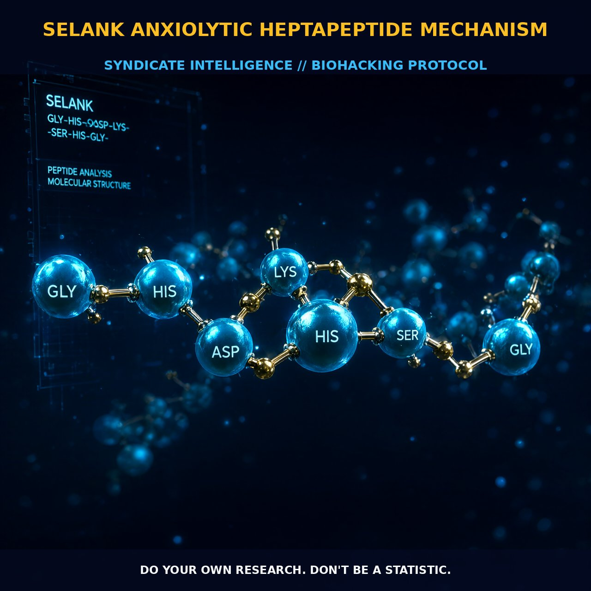

Selank: Allosteric GABA Modulation and Neurotrophic Resilience

1. The Mechanism
Selank operates as a sophisticated heptapeptide analog of tuftsin, structurally defined by the sequence Thr-Lys-Pro-Arg-Pro-Gly-Pro. Its primary anxiolytic influence is exerted through positive allosteric modulation of GABA receptors. Unlike classical benzodiazepines that bind directly to their orthosteric sites, Selank modulates [3H]GABA binding in a subtype-selective, concentration-dependent manner, suggesting a distinct but potentially overlapping binding locus.
This allosteric action is not merely cumulative; when administered jointly with diazepam or olanzapine, Selank regulates GABAergic activity in a specific manner that differs from the isolated effects of either substance. It effectively blocks the modulatory activity of these conventional drugs without competing for the same exact binding pocket. The peptide’s ability to alter GABA receptor conformation allows it to dampen neuronal excitability while preserving the structural integrity of the synaptic cleft, offering a pathway to reduced anxiety that avoids the blunt force trauma of full agonists.
2. Biological Leverage
Beyond direct GABAergic interaction, Selank demonstrates significant regulatory capacity over endogenous opioid systems and neurotrophic factors, broadening its pharmacological footprint. Research indicates that Selank inhibits enkephalin-degrading enzymes, thereby extending the half-life of enkephalins in the blood and central nervous system. This contributes to a sustained reduction in pain perception and stress response.
In models of unpredictable chronic mild stress, this enzymatic protection helps normalize anxiety indicators toward pre-stress baselines more effectively than the deterioration seen with some other peptide courses. Furthermore, Selank interacts with the brain's reward and memory circuits by regulating Brain-Derived Neurotrophic Factor (BDNF) content in the hippocampus and prefrontal cortex. This mechanism parallels its role in protecting against ethanol-induced memory impairment and attenuating aversive signs of morphine withdrawal through increased tactile sensitivity thresholds.
3. Protocol Implementation
While precise human clinical trials remain less detailed than rodent models, the pharmacological data suggests a clear path for protocol design based on peptide class and receptor affinity. Selank is administered as a heptapeptide, meaning it consists of seven amino acids, which grants it sufficient stability to interact with membrane receptors effectively before degradation.
For human application, low-to-moderate doses are suggested to engage the positive allosteric modulation of GABA receptors without overwhelming the system. Although rodent studies utilizing intraperitoneal injection demonstrate significant efficacy at an anxiolytic dose of 0.3 mg/kg, exact milligram ranges for subcutaneous or intranasal delivery require further individual titration as human metabolic rates differ from outbred rat models.
Timing and stacking are critical components for maximizing Selank's anxiolytic and nootropic benefits. Given its interaction with benzodiazepines like diazepam, where it can block or modulate their specific activities rather than just adding to them, users should be aware that combining Selank with high-dose benzos may alter the expected sedative outcome, potentially leading to a more balanced state of calm alertness.
4. Prostar Life Hack
The Synergy Stack: Administer Selank during periods of high cognitive load or stress exposure to maximize BDNF upregulation in the hippocampus and prefrontal cortex. This creates a synergistic shield against memory impairment, particularly when stacking with cholinergic or glutamatergic nootropics, provided you account for its distinct GABA binding profile to avoid over-sedation.
Prostar Life Hack
The Synergy Stack: Administer Selank during periods of high cognitive load or stress exposure to maximize BDNF upregulation in the hippocampus and prefrontal cortex. This creates a synergistic shield against memory impairment, particularly when stacking with cholinergic or glutamatergic nootropics, provided you account for its distinct GABA binding profile to avoid over-sedation.
[ AUTHOR: LEAD TECHNICAL RESEARCHER ]